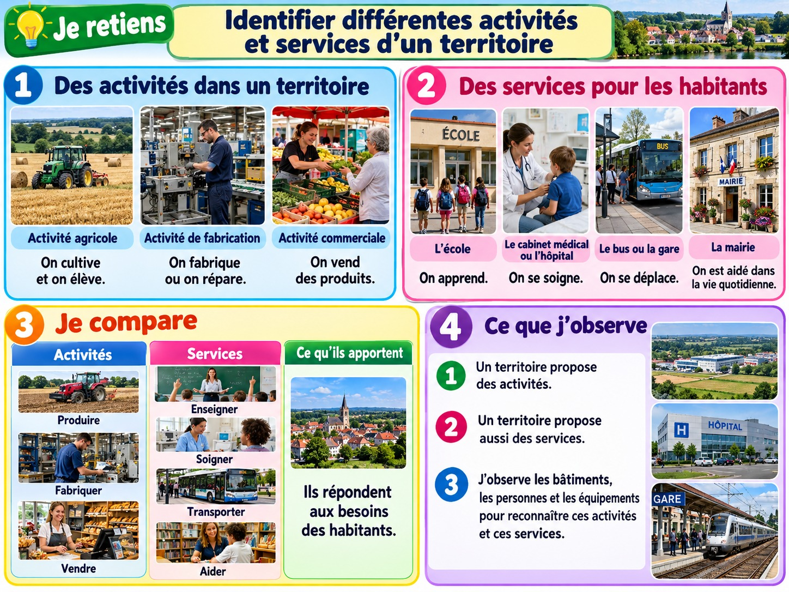

Identifier différentes activités et services d’un territoire
Comprendre comment les activités économiques et les services répondent aux besoins des habitants.
J’observe

Illustration pédagogique composée à partir de visuels de style photographique.
Des activités variées
Un territoire peut accueillir des exploitations agricoles, des ateliers, des commerces et des lieux touristiques. Les activités dépendent notamment des ressources et des besoins.
Des services utiles
L’école permet d’apprendre, le centre médical de se soigner et les transports de se déplacer. Un service répond à un besoin sans nécessairement fabriquer un objet.
Des emplois liés au territoire
Les agriculteurs, commerçants, soignants, enseignants ou conducteurs ont des métiers différents. Un même territoire peut accueillir de nombreuses activités.
Je retiens
Sur un territoire, les habitants travaillent, produisent, échangent et utilisent des services. Les activités et services répondent à des besoins : manger, apprendre, se soigner, se déplacer ou se divertir.